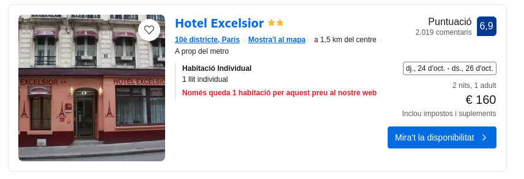
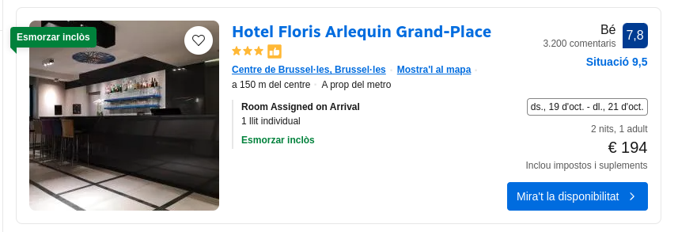
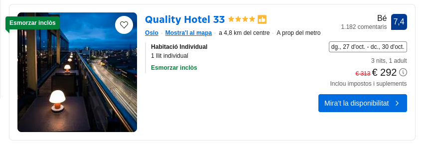
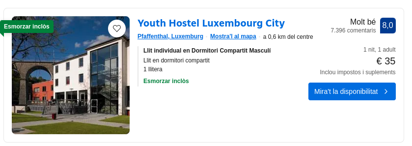

Esta es la ruta en coche, sera del Puig Castellar hasta Belgica, de Beglica a Noruega
La primera ruta será del Puig Castellar hasta París, en este sitio será donde se va a descansar una noche
La segunda ruta será de París hasta Bruselas, en este sitio se va a descansar durante una noche
La tercera ruta será de Bruselas hasta Oslo, en este sitio será donde se va a descansar durante 2 dias en los que se hará turismo
La vuelta será diferente, de Oslo a Luxembrugo y de Luxemburgo al Puig Castellar
La primera ruta de la vuelta será de Oslo hasta Luxemburgo se va a descansar una noche
La ultima ruta será directamente hasta Puig Castellar y de vuelta